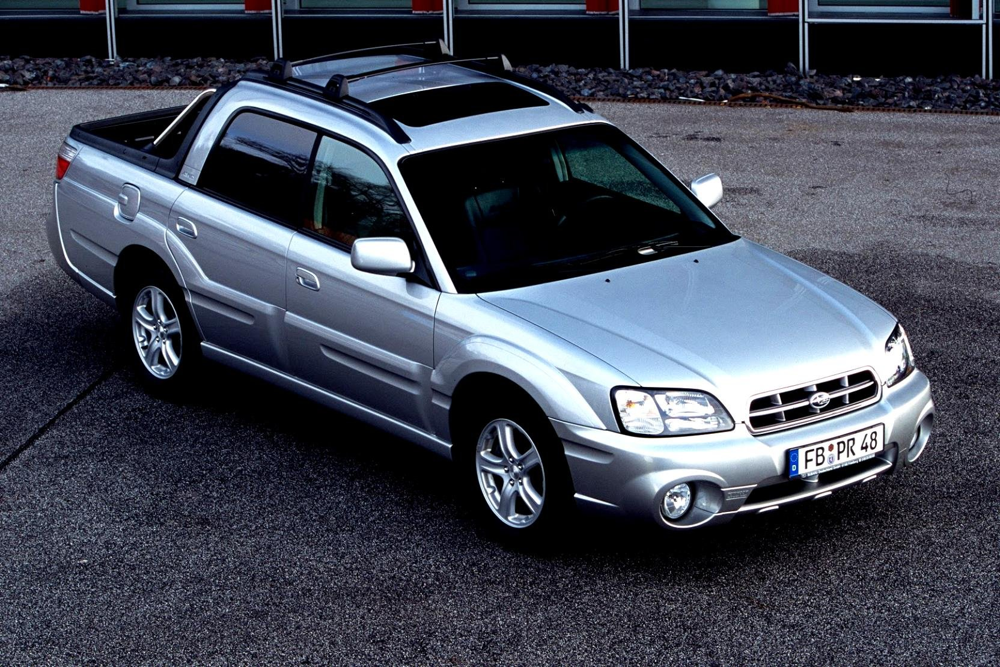
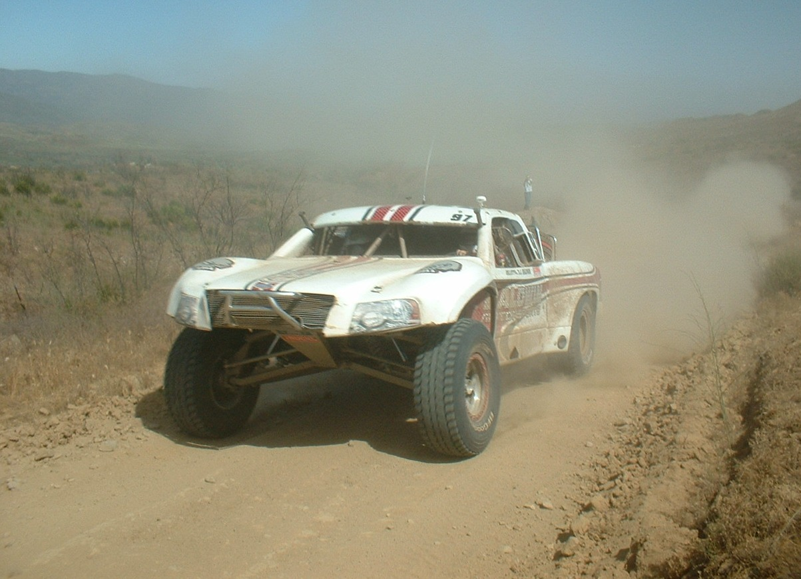

Subaru Baja — полноприводный пикап, выпускавшийся с 2002 по 2006 год японской компанией Subaru.
Производство Subaru Baja было начато 18 июля 2002 года в Лафейетте, штат Индиана, а продажи начались в 2003 модельном году. Baja сочетает в себе управляемость и вместимость традиционного легкового автомобиля с универсальностью и грузоподъёмностью малолитражного пикапа.
Конструкция цельнометаллического кузова, платформа, листовой металл и прочие элементы были позаимствованы у легкового автомобиля Subaru Legacy/Outback. Автомобиль, созданный в соответствии с концептом Subaru ST-X (Sport Truck X-perimental), представленном в 2000 году на Международном автосалоне в Лос-Анджелесе, разработан специальной командой дизайнеров Subaru America под руководством Питера Тенна, старшего дизайнера Subaru.
Название «Baja» происходит от мексиканского полуострова Нижняя Калифорния, где проходит внедорожная гонка Baja 1000.
